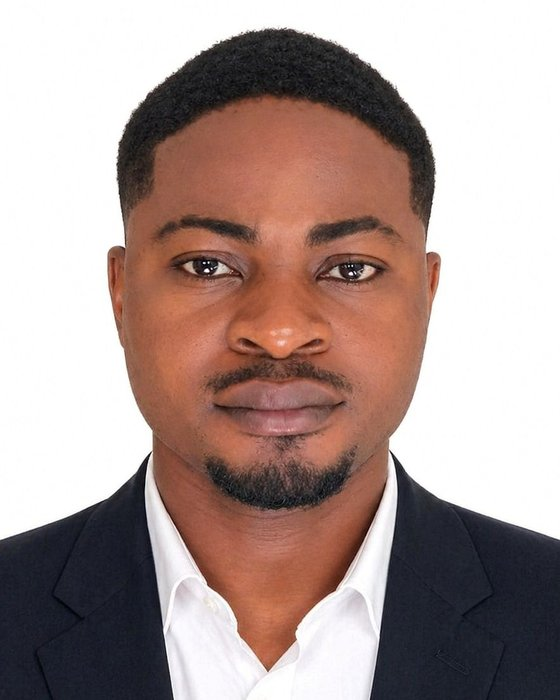

News
LatestResearch
Three connected linesTrustworthy scientific ML
Physics-informed neural networks and neural operators checked against spectral and semi-analytical solutions, with attention to when learned solvers break physical laws.
Non-Fourier heat transport
Three-phase-lag conduction and thermal waves in porous and layered media, with applications to hypersonic thermal protection and cooling architectures.
Micro- and reactive flows
Electro-magnetohydrodynamic and electroosmotic microflows, entropy generation, nanofluids, and reactive transport for energy and water applications.
Selected publications
Five papers that define the workAll publications
Synced from Google Scholar & ORCIDProspective students & collaborators
Open to enquiriesI supervise MSc and PhD research at Ahmadu Bello University and welcome collaboration from researchers elsewhere. Projects combine mathematical modelling, numerical analysis and, increasingly, scientific machine learning. Most lead to journal publications during the degree.
- Physics-informed neural networks: when PINNs fail, stiff and non-Fourier problems, and uncertainty in learned solvers.
- Non-Fourier heat conduction: dual- and three-phase-lag models for electronics cooling and thermal protection.
- Electrokinetic and EMHD microflows: electroosmotic convection, entropy generation and micro-energy harvesting.
- Fractional-order models of convection and transport.
- Applied problems with African relevance: enhanced oil recovery, produced-water treatment and thermal monitoring of power infrastructure.
- A strong first degree in mathematics, physics or engineering.
- Comfort with differential equations and numerical methods.
- Some programming in MATLAB, Python or a similar language, or willingness to learn quickly.
Email me with your CV, academic transcript and a short paragraph on which area interests you and why. Put “Prospective student” or “Collaboration” in the subject line so I see it quickly. Contact details are below.
Curriculum vitae
Download full CV (PDF)- 2026 – nowPostdoctoral FellowUnit for Data Science and Computing, North-West University, South Africa
- 2025 – nowSenior LecturerDepartment of Mathematics, Ahmadu Bello University, Zaria
- 2022 – 2025Lecturer IAhmadu Bello University, Zaria
- 2019 – 2022Lecturer IIAhmadu Bello University, Zaria
- 2016 – 2019Assistant LecturerAhmadu Bello University, Zaria
- 2014 – 2016Graduate AssistantAhmadu Bello University, Zaria
- 2021PhD MathematicsAhmadu Bello University, Zaria. Thesis: A Study on Electroosmotic Natural and Mixed Convection Flows in Vertical Microgeometries with Isothermal and Isoflux Boundary Conditions
- 2016MSc MathematicsAhmadu Bello University, Zaria. Dissertation: A Study on Natural Convection Flow in Cylindrical Geometries with Time-Periodic Heat Input
- 2012BSc (Hons) Mathematics, First ClassAhmadu Bello University, Zaria
- Principal Investigator, TETFund Institution-Based Research (IBR) Grant, Ahmadu Bello University (2025).
- Member, Nigerian Young Academy (2025).
- Innovation: the paraletrix, a generalization of the rhotrix (Afrika Matematika, 2015).
- Vice-Chancellor's Award of Excellence, ABU 2011/2012 Convocation (2012).
- Bronze medal, National Mathematics Competition for University Students (NAMCUS), National Mathematical Centre, Abuja (2012).
92 verified reviews of 65 manuscripts (Web of Science), for journals including
Heat Transfer – Asian Research · ZAMM · Propulsion and Power Research · International Journal of Ambient Energy · Numerical Heat Transfer A & B · Journal of Thermophysics and Heat Transfer · International Journal of Numerical Methods for Heat & Fluid Flow · IEEE Transactions on Industrial Informatics · Physica Scripta · Engineering Applications of Computational Fluid Mechanics
- Nigerian Young Academy (2025 – now)
- Mathematical Association of Nigeria (2014 – now)
- Nigerian Mathematical Society (2015 – 2021)
- PhDUsman Rilwan · Electroosmotic natural convection of nanofluids with induced magnetic field Major supervisor · ongoing
- PhDLuqman Azeez · Natural convection of nanofluids in a vertical channel with suction/injection Co-supervisor · ongoing
- PhDIsmaila Oyelade · Dual-phase-lag natural convection in a vertical channel Co-supervisor · ongoing
- MScFatai Mohammed · Entropy generation with isothermal/isoflux conditions Major supervisor · ongoing
- MScHenry Ibrahim · Temperature-dependent viscosity in natural and mixed convection Major supervisor · ongoing
- MScShakira Adebayo · Heat and mass transfer in unsteady EMHD natural convection Major supervisor · 2026
- MScAhmed Abdulmalik · Hall current effects on free convection in a porous channel Major supervisor · 2026
- MScVampah Tizhe Peter · Entropy generation in MHD porous-channel flow with Navier slip Co-supervisor · 2026
- MScUsman Rilwan · Time-dependent natural convection with heat source/sink Major supervisor · 2021
- 202410th International Aegean Conferences on Innovation Technologies & Engineeringİzmir, Türkiye · two papers on EMHD and electrokinetic convection
- 20248th International Conference on Global Practice of Multidisciplinary Scientific StudiesDubai, UAE · mixed convective rarefied gas flow with flow reversal
- 2022Ankara International Congress on Scientific Research VIAnkara, Türkiye · oral presentation
- 202139th Annual Conference, Nigerian Mathematical SocietyRedeemer's University, Ede · two oral presentations
- 201635th Annual Conference, Nigerian Mathematical SocietyFUT Minna · two papers
- 201552nd Annual Conference, Mathematical Association of NigeriaUNEC, Enugu
Numerical Analysis I & II, Engineering Calculus, Linear Algebra, Vectors, Algebra, and Research Methodology (MATH 812). Postgraduate engineering mathematics and numerical methods for the PGD Civil Engineering programme, and online tutoring for the ABU Distance Learning Centre since 2020.
Contact
I welcome collaboration on heat transfer modelling, scientific machine learning and applied problems with African relevance, and enquiries from prospective research students.